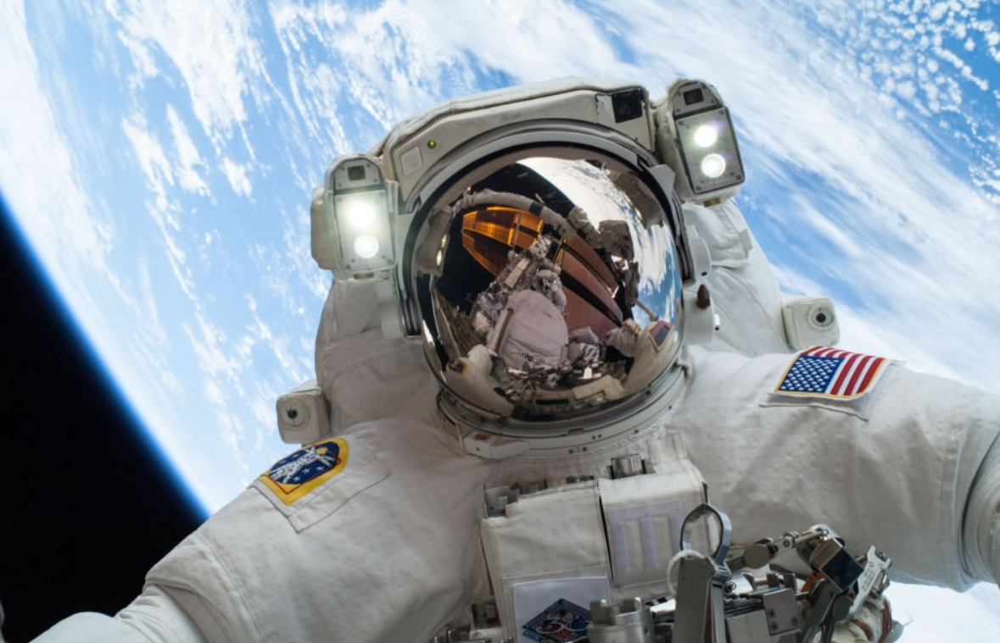
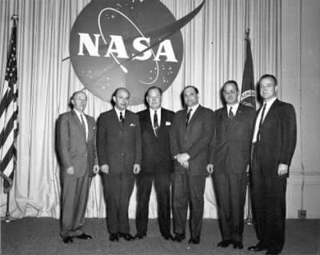
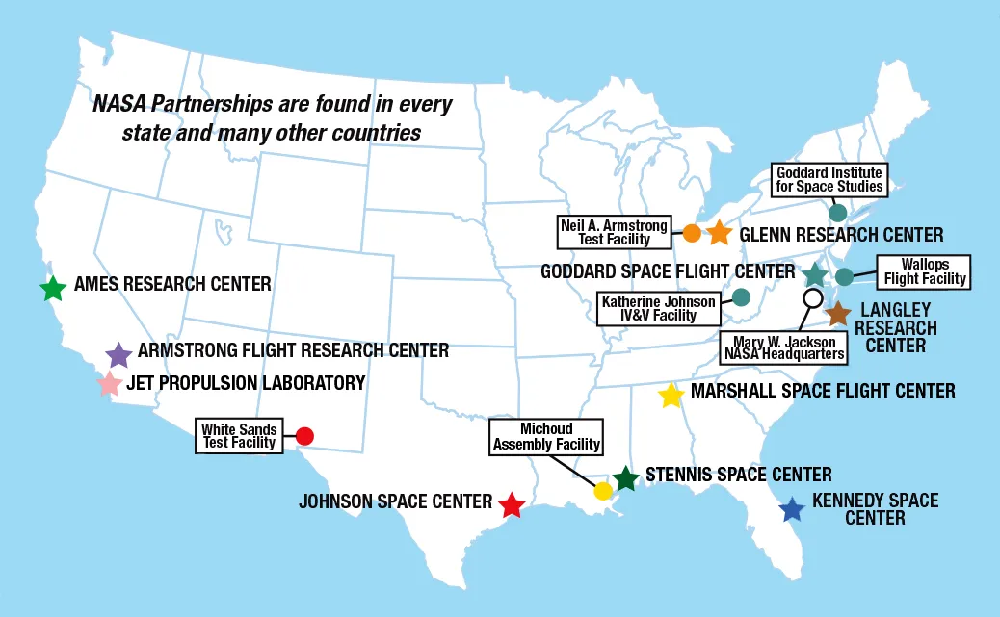

La NASA es la Administración Nacional de Aeronáutica y del Espacio de Estados Unidos, una agencia federal encargada de la investigación espacial y aeronáutica. Se utiliza para explorar el espacio, entender y proteger nuestro planeta, innovar en beneficio de la humanidad y para desarrollar tecnologías aeronáuticas que mejoran el transporte aéreo. Sus actividades incluyen misiones a la Luna y Marte, el estudio del clima terrestre y el desarrollo de tecnologías como la inteligencia artificial.
Desde su fundación en 1958, la NASA ha traspasado los límites científicos y técnicos para explorar lo desconocido para todos los habitantes de nuestro planeta. Descubra la historia de nuestros programas de vuelos espaciales tripulados, ciencia, tecnología y aeronáutica.
Ultimos iPhones
La NASA no tiene una única ubicación, sino una sede principal en Washington D.C. y 10 centros de campo y diversas instalaciones distribuidas por todo Estados Unidos. La sede central en Washington ofrece la dirección general de la agencia, mientras que los centros de campo realizan las operaciones de investigación y exploración diarias, como en el Centro Espacial Kennedy (Florida) para los lanzamiento y el Centro Espacial Johnson (Texas) para los vuelos tripulados.
Martina Ferrando - Instituto Vision Tecnologica